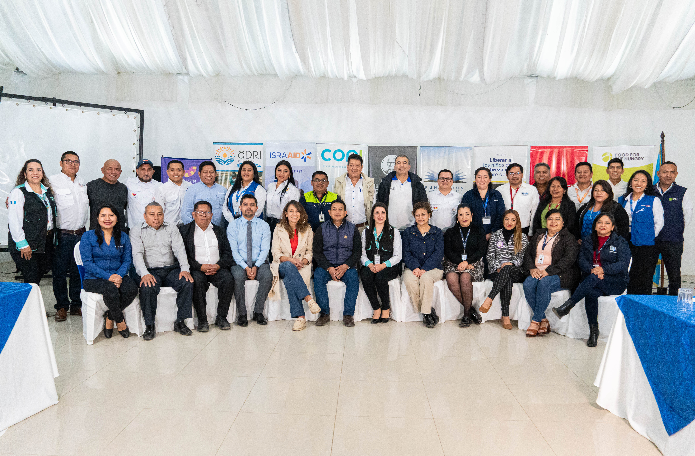
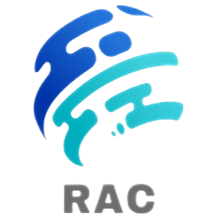

Misión
Contribuir a mejorar la calidad de la educación del departamento de Alta Verapaz, a través de procesos de incidencia, coordinación interinstitucional de las organizaciones cooperantes, velando por la protección de la niñez y adolescencia.
Visión
Calidad educativa en el departamento de Alta Verapaz, a través de la intervención coordinada de la Red de Agencias Cooperantes por la Educación en Alta Verapaz y la Dirección Departamental de Educación.
Objetivos
Ejes de trabajo
